The Lilly Pad
A light-filled pondside cottage on three levels, among fruit trees and coffee.
Una casita llena de luz, en tres niveles, junto al estanque, entre frutales y café.
Book on AirbnbReservar en Airbnb ↗San Luis de Monteverde · Costa Rica
Coffee, cows, gardens and cloud forest in our own quiet valley below Monteverde. Come stay, get tattooed, drink the coffee, walk the rows — or just slow down for a while.
Café, vacas, huertas y bosque nuboso en nuestro propio valle tranquilo, más abajo de Monteverde. Venga a hospedarse, a tatuarse, a tomar el café y caminar los cafetales, o simplemente a bajar el ritmo un rato.
Querencia — the place where one feels at home; where strength is drawn from, where one returns.
Querencia — el lugar donde uno se siente en casa; de donde uno saca fuerzas y adonde siempre vuelve.
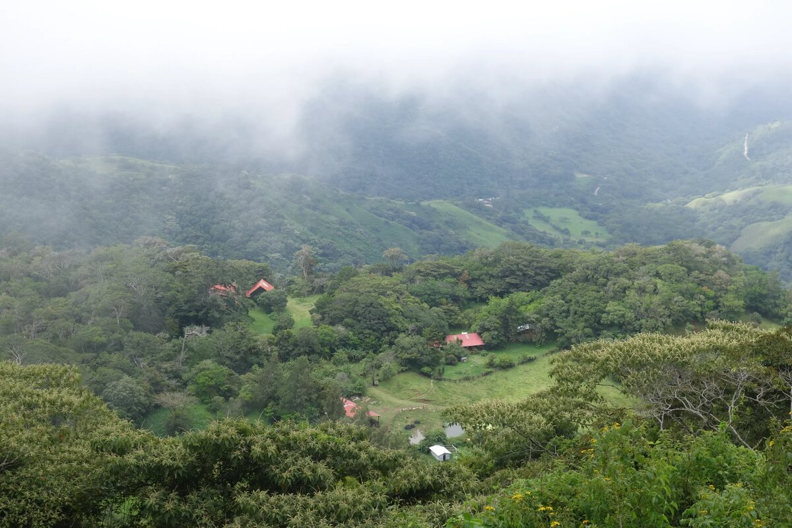
ExploreExplore
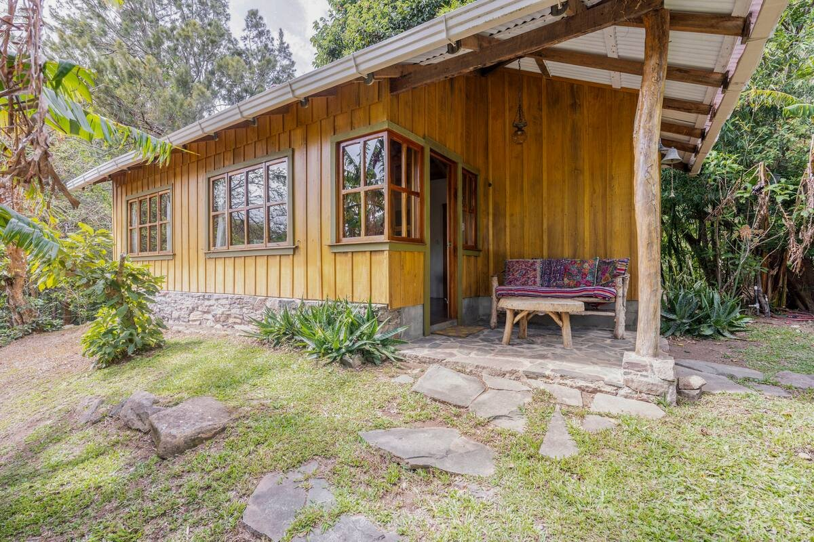
Farm cottages, booked on Airbnb.
Casitas en la finca, reservas por Airbnb.

Get tattooed by Papayo, then rest on the farm.
Tatúese con Papayo y descanse en la finca.
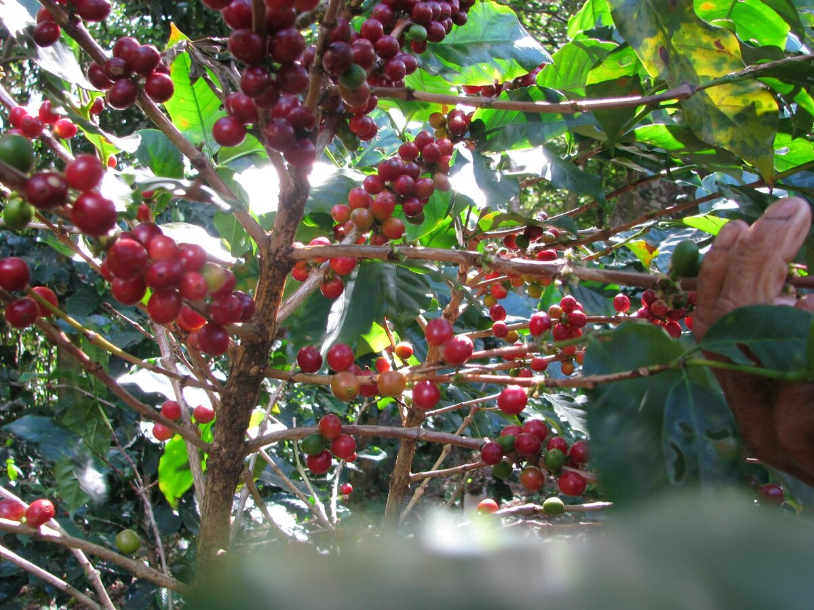
Pueblo Chico — grown and processed right here.
Pueblo Chico — cultivado y procesado aquí.
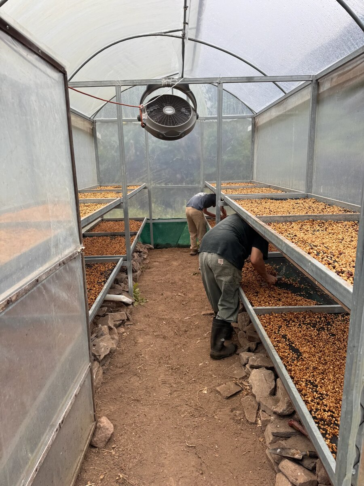
From flower to cup, on a real family farm.
De la flor a la taza, en una finca familiar.
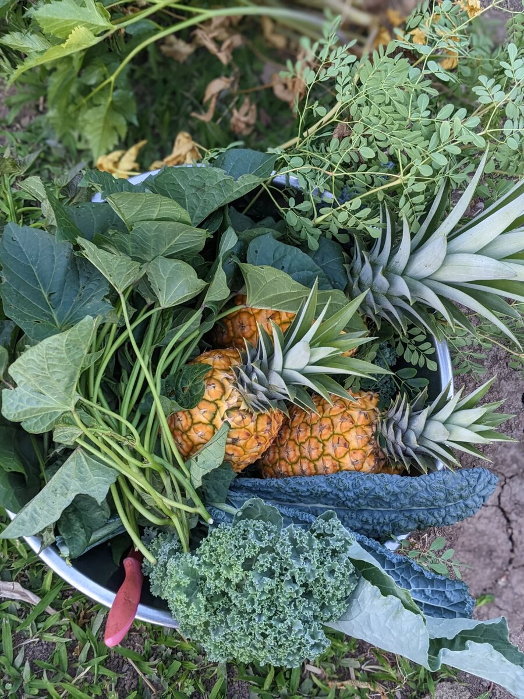
Vegetables, dairy and eggs from the farm.
Verduras, lácteos y huevos de la finca.
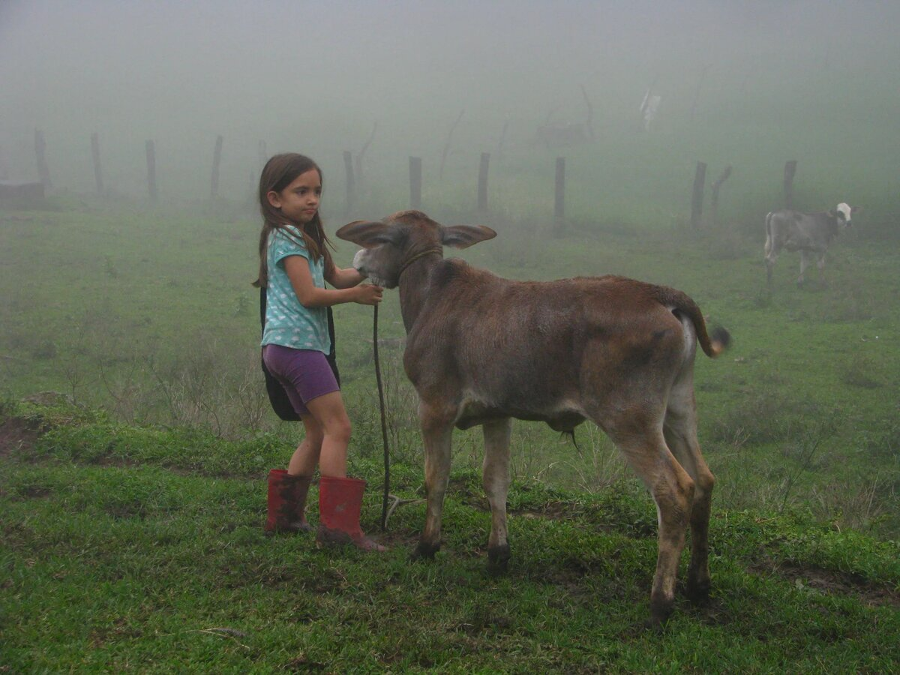
Twenty-five hectares and twenty-plus years.
Veinticinco hectáreas y más de veinte años.
StayHospedaje
Three small houses tucked among the gardens, ponds and coffee — each one private, each one built by hand. Wake up to mist on the pastures, swim in the spring-fed pond, and be in Monteverde in fifteen minutes when you want to be.
Tres casitas entre las huertas, los estanques y el café — cada una privada, cada una construida a mano. Despierte con neblina sobre los potreros, nade en el estanque de agua de naciente y esté en Monteverde en quince minutos cuando quiera.
Our houses are hosted and managed by Juan Pablo (Momo). Book directly on Airbnb, or see all of Juan Pablo's listings.
Las casas las administra Juan Pablo (Momo). Reserve directamente en Airbnb, o vea todos los anuncios de Juan Pablo.
A light-filled pondside cottage on three levels, among fruit trees and coffee.
Una casita llena de luz, en tres niveles, junto al estanque, entre frutales y café.
Book on AirbnbReservar en Airbnb ↗
The original farmhouse, modernized — big kitchen and living room, views of garden and pasture.
La casa original de la finca, renovada — cocina y sala amplias, con vista a la huerta y los potreros.
Book on AirbnbReservar en Airbnb ↗
A simple cabin with bunk beds and a porch looking out over the pastures and forest.
Una cabaña sencilla con camarotes y un corredor con vista a los potreros y el bosque.
Being remodeled — see photosEn remodelación — ver fotos ↗
Papayo TattooPapayo Tattoo
Papayo is Jackson, our son — a tattoo artist and painter who grew up on this farm. He's starting to spend part of each year tattooing here. Come for a session, stay a few days, and give the work time to settle: farm food, forest walks, the pond, and nothing much to do.
Papayo es Jackson, nuestro hijo — tatuador y pintor que creció en esta finca. Ahora empieza a pasar parte del año tatuando aquí. Venga a su sesión, quédese unos días y dele tiempo al tatuaje: comida de la finca, caminatas por el bosque, el estanque y nada urgente que hacer.
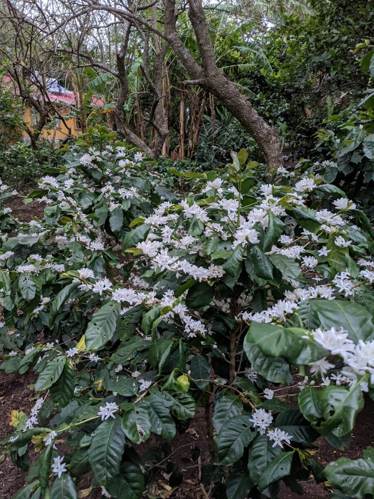
Pueblo Chico Coffee
Our coffee is Pueblo Chico — honey-processed Arabica grown, picked and dried here on the farm, then sorted, roasted and packed by the family. A team effort from plant to bag. Order a bag, or come walk the coffee on a tour, from flower to cup.
Nuestro café es Pueblo Chico — arábica proceso honey cultivado, cosechado y secado aquí en la finca, y luego escogido, tostado y empacado por la familia. Un trabajo en equipo de la mata a la bolsa. Pida una bolsa o venga a recorrer los cafetales en un tour, de la flor a la taza.
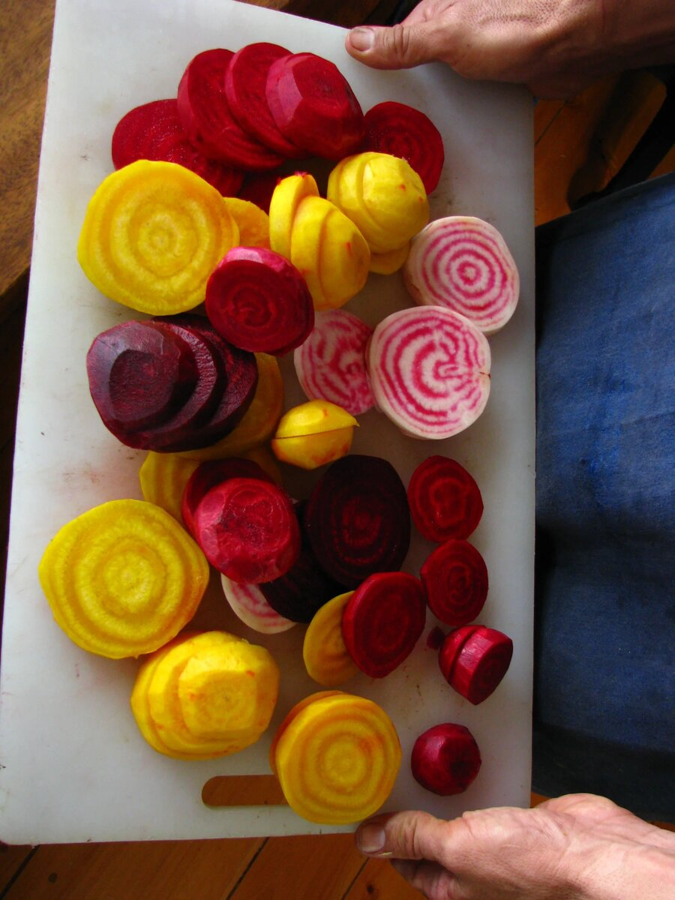
Farm marketProductos de la finca
Our large organic garden is tended every day. We grow it without chemicals — not certified, but we know exactly what goes on the plants. When there's extra, we sell vegetables, fresh dairy and eggs to neighbors and visitors.
Nuestra huerta orgánica se trabaja todos los días. La cultivamos sin químicos — no está certificada, pero sabemos exactamente qué se le pone a las plantas. Cuando hay de sobra, vendemos verduras, lácteos frescos y huevos a vecinos y visitantes.
The farmLa finca
Finca Querencia sits at the end of the road in San Luis, about 300 meters below Monteverde — a little warmer, and far from the tourist bustle, but close enough to town for dinner. We've farmed here for more than twenty years.
Finca Querencia está al final del camino en San Luis, unos 300 metros más abajo de Monteverde — un poco más cálido y lejos del bullicio turístico, pero lo bastante cerca para ir a cenar al pueblo. Llevamos más de veinte años trabajando esta tierra.
It's a working dairy, with much of the work still done on horseback. Alongside the cows there are sheep, calves, chickens, fish ponds, fruit trees, coffee and a big organic garden. Most of the buildings were designed and built by hand, right here.
Es una lechería activa, donde mucho del trabajo todavía se hace a caballo. Además de las vacas hay ovejas, terneros, gallinas, estanques de peces, árboles frutales, café y una huerta orgánica grande. La mayoría de las construcciones se diseñaron y levantaron a mano, aquí mismo.
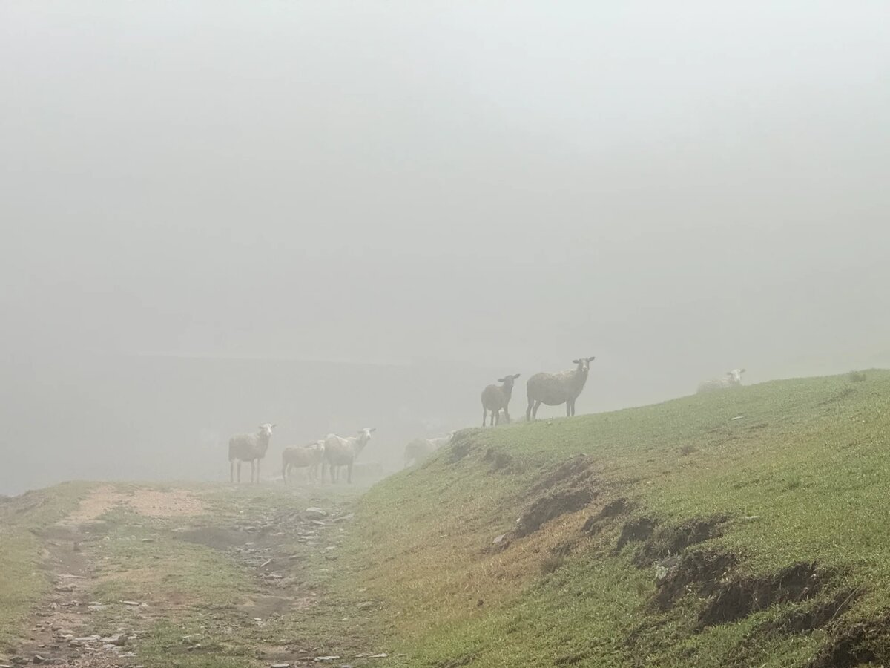
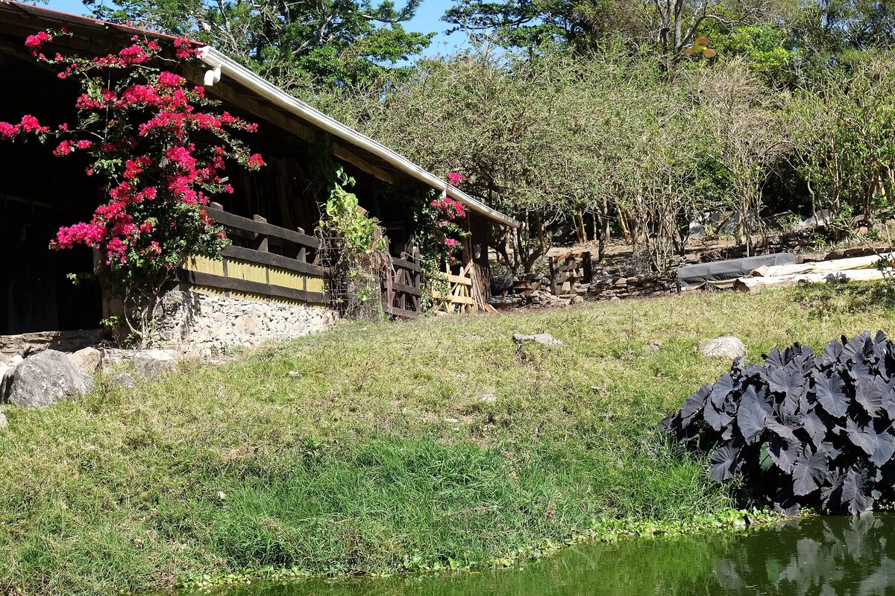

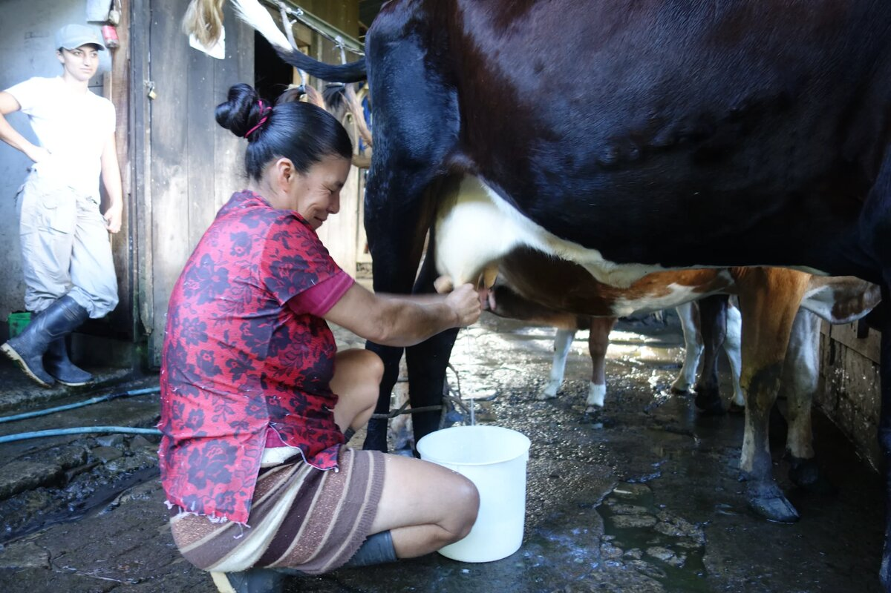
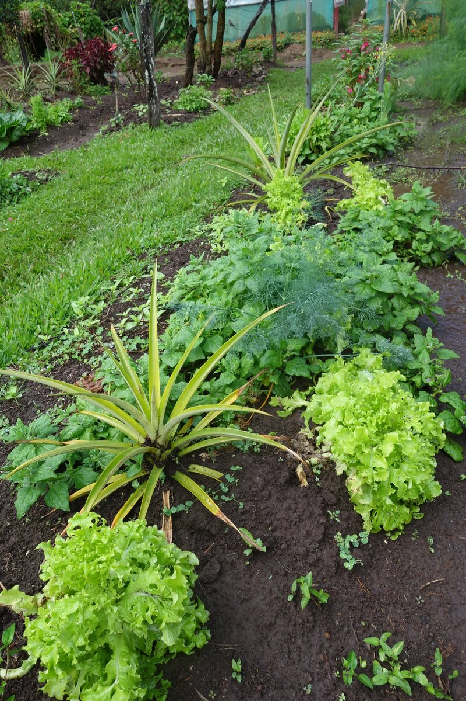
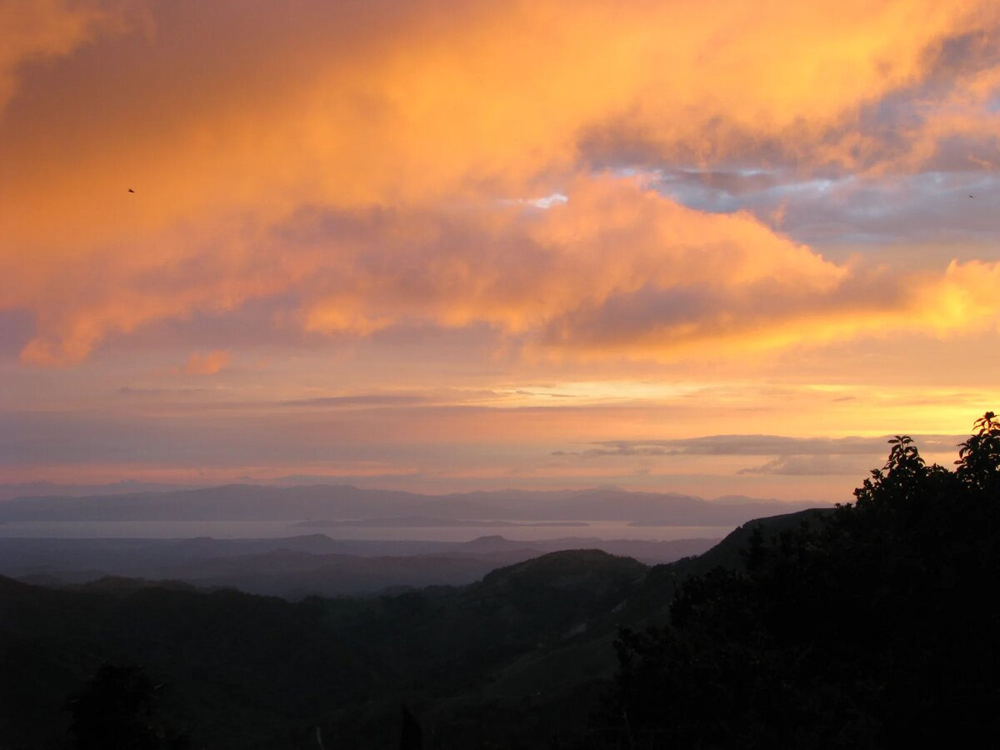